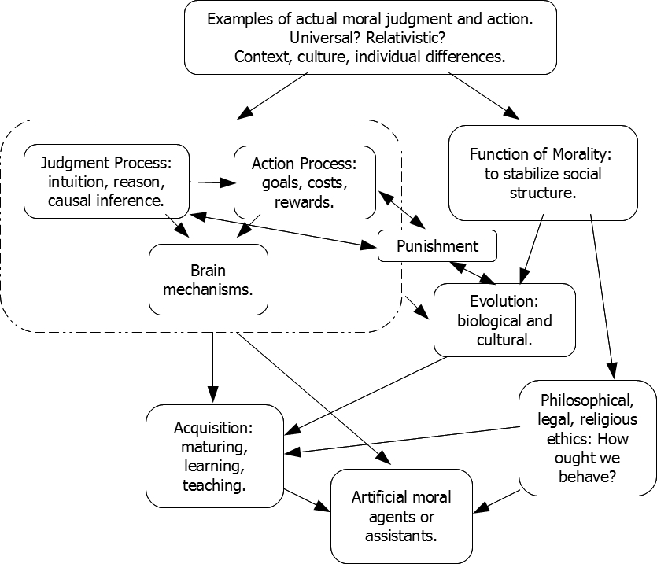

Course description:
This course surveys recent scientific research about the psychology of moral judgment, broadly construed. Moral psychology examines how people make judgments of appropriate behavior. Many scientific disciplines inform this domain, including social psychology, anthropology, evolutionary biology, ethology, developmental psychology, brain science, cognitive psychology, robotics and artificial intelligence, among others.
This is not a course about religion, nor is it a course about the philosophy of ethics. This course is about the psychological mechanisms of moral judgment, not a course about what correct judgments ought to be.
Required readings:
We will be reading approximately 30 original articles from scientific journals. The reading list for 2015 will unfold as the class progresses. A reading list from 2011 is linked here. The diagram below shows a concept map for various topics in the course.
|  |
| Concept map for various topics in the course. Arrows denote, roughly, which topics inform each other and/or the approximate order in which topics will be addressed in class. |
Prerequisites:
Advanced undergraduates who are able to carefully read, digest, discuss, and present scientific articles are heartily encouraged to enroll in P457. Graduate students should enroll in P657. There are no formal pre-requisites.
Course format and grading:
Class format: This is a readings and discussion course. The course therefore relies on well prepared students who actively participate. The grading procedures are designed to encourage (and to recognize :-) thoughtful preparation and participation. Most class days will begin with a short quiz, followed by a brief summary of the day's readings, followed by extensive discussion of the readings. Some days will include an exam instead.
Quizzes: Each quiz will involve some multiple-choice or short-answer questions about that day's readings, and some short questions about the previous day's readings. The questions about the previous day's readings will often focus on issues that arose in discussion. Across the semester there will be over 20 quizzes, but the quiz component of a student's grade is based on his or her 20 best quiz scores. Fewer than 20 quizzes will be used for grading only if every missed quiz has a documented cogent excuse. There will be 15 points per quiz, for a total possible of 300 quiz points.
Participation: For each class day that has discussion, up to 2 participation points can be earned. 1 point is earned for basic contribution to discussion, and a 2nd point is earned for especially thoughtful or insightful contributions. Up to 1 of the 2 points can be earned via follow-up Oncourse discussion. The maximum possible participation points will be approximately 50 (because some days may not involve discussion).
Exams: Exams will ask questions about individual readings, but also about relations between readings, especially about relations between readings that have emerged in discussion. There will be 3 exams, at approximately five-week intervals through the semester. The exam component of a student's grade is based on his or her 2 best exam scores. A make-up examination for more than one missed exam will be allowed only if every missed exam has a documented cogent excuse. There will 100 points per exam, for a total possible of 200 exam points.
Grades will be based on the combined points from quizzes, participation, and exams. Letter grades will be assigned according to rank in class (i.e., percentile of total points attained), but there is not a pre-set threshold or quota for each letter grade. It is expected that quality of work in this class will be very high, and therefore there might be relatively few low grades, but low grades will be assigned when appropriate.
This page is at URL = http://www.indiana.edu/~jkkteach/P657ScienceOfMorality/